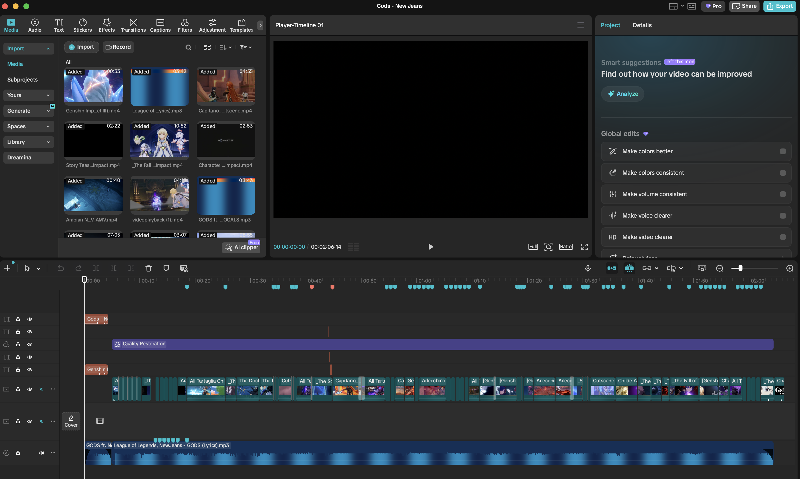

Teacher Resources
327 Words
01 — Timeline
Week 1 Reflection
Getting the Genshin footage was pretty smooth but sometimes it was hard since I didn't know what to search up to find the video that I wanted. The beat map did indeed change how I imagined the edit. The edit looks good so far and I am excited to see the final product. If I were to describe the edit in 2 sentences, it would be: Perfectly beat synced, smooth, immersive and fun to watch. The edit would show the Genshin characters' background like a book in motion.
Week 2 Reflection
Some of the clips did lose quality after downloading so I had to find other websites to convert it and after a bit I did find a good converter that doesn't make the clip lose quality. That is how I solve most of the technical issues. One more issue that I did come across was that in CapCut the clips were a bit laggy but I just had to update and refresh the app so that was a decently easy fix.
Week 3 Reflection
My clips feel very in sync with the music. The energy and feel are matching perfectly. The hardest part of beat syncing was that some parts of the music needed the clips to be frame perfect to the beat, which I had to move frame by frame which was a bit tedious. Some things that I will change are some of the clips since I found some better clips for the edit.
Week 4 Reflection
The colour grade across the video feels a bit inconsistent so I will work on fixing that. All of the beat syncs feel very natural and all of the transitions are very smooth. I saw that a few of the clips don't fit naturally so I will also work on fixing that. Also since the video isn't exported to the full resolution yet, some of the clips are pixilated and not clear.
Week 5 Reflection
My family members said that I could use better transitions to better create a certain atmosphere, it could be a little shorter, and also I could improve the graphics as there were older ones mixed with new ones. It was as I expected because I only use the free version of CapCut so the graphics and transitions are not as good as the paid version. The suggestions helped improve the edit since I get a different person's opinion and perspective so I can make the edit more appealing to a wider variation of people.
Final Reflection
Overall, I think I have achieved my original concept vision, as the finished edit was 1:1 on what I was thinking it was going to be. The most important skill that I developed was beat syncing, since learning how to map a song and structure every cut, speed ramp, and transition around the beat had the biggest impact on the quality of the final edit. If I were to make another one, I would definitely build a bigger clip library before starting the edit so I will have more stuff to work with and avoid getting more replacement clips midway through. For assessment criteria, this project meets PIA1 through the detailed 6-week timeline that I have created. PIA2 through my ability to reflect and adapt to challenges such as low quality clips, CEL1 through how I communicated my initial concept and documented my process of making, and finally CEL2 through my use of peer feedback in week 5 which I applied to improve the final edit.
Strategic Action Plan
My strategic action plan for this EIF project centres on producing a polished Genshin Impact gaming edit that reflects my creative identity and interest in digital media.
Goal
The primary goal is to complete and publish a high-quality Genshin Impact gaming edit by Week 6, demonstrating skills in video editing, beat synchronisation, colour grading, and transitions that communicate my passion for gaming culture and visual storytelling.
Timeline
Week 1 — Research editing styles and gather inspiration. Source high-quality cutscenes and gameplay footage from YouTube, and select a soundtrack that matches the tone I want to achieve.
Week 2 — Import all footage into CapCut and begin the rough cut. Arrange clips in sequence and sync cuts to the beat of the chosen track.
Week 3 — Refine the edit by adding transitions between clips to maintain smooth visual flow. Apply colour grading to establish a consistent cinematic aesthetic throughout.
Week 4 — Review the full edit and make final adjustments. Gather peer feedback and incorporate any meaningful improvements.
Week 5 — Apply final refinements based on feedback. Polish any remaining transitions, colour grading, or timing issues to bring the edit to a finished standard.
Week 6 — Export the final product and prepare for the Year 9 showcase presentation.
Resources Needed
CapCut (free editing software), YouTube (source of footage and cutscenes), a computer with sufficient processing power, reference edits from other creators for stylistic inspiration, and peer feedback during the review phase.
Identity and Future
This project connects to my identity as someone with a strong interest in gaming culture and creative digital expression. By completing this edit I am developing real-world video production skills transferable to future pathways in media, content creation, or digital design. Planning, executing, and refining a creative product mirrors professional workflows and builds the discipline needed for future creative pursuits.
02 — Evidence of Work

Question 01
Explain how my actions support the goal?
The final objective in this task would be planning, designing, and releasing the Genshin Impact edit as a completed piece. Each action that I undertake throughout the timeline is directly related to achieving the goal, whereby in the first weeks, the collection of clips forms the basis of footage used, and in the second weeks, editing skills are refined for better results, and finally, by Week 5, I will have feedback for the video before release. All these steps were not taken randomly but they all lead to the final product.
Question 02
What it is about and what I need to know?
I am going to make a gaming edit on a game called Genshin Impact. Genshin Impact is a fantasy, open-world action role playing game. For this task I will need to find small cutscenes in the game on Youtube, and then import it to capcut, then edit the small snippets of clips together to make the final product. I will need to know how to match the videos to the beat, add transitions to the clips, and colour grade it, all just to make it entertaining and immersive to watch.
Question 03
How did you ensure the final product was engaging for the audience?
I ensured that the final product was engaging by adding special effects, smooth transitions, colour grading all for the immersion of the edit. The clips also have been picked to catch the viewers attention and keep them hooked to the video.
Question 04
What did you learn from this EIF project?
Some things that I learned from doing this experience was firstly, was a lot of practical skills on how to edit videos such as colour grading, transitions, special effects, beat syncing which I had little experience with. Beyond the practical skills, this project taught me how to select the right footage for the right moments to create a miniature story in the edit. These skills will definitely help me in the future and also I gained a better understanding of my identity, as someone who likes gaming and video editing.
Reflection
Throughout this project, I had to carefully think about which tasks needed to be completed first and each had a reason, rather than just doing them randomly. My first priority was planning the concept of the edit, and getting the footage before using the editing software at all. This is a very important part because, unlike a gaming edit where you record your own gameplay, I had to find every scene on Youtube, download it, and then convert it on a Youtube to MP4 Website before I could even start. If I had gone straight into editing the video without good clips, I would have to stop, and go find more and more clips which would waste precious time. By doing all of the clip finding and downloading processes in Weeks 1 and 2, then I can focus more heavily on editing the video and I can use my time more effectively.
Managing resources was another key part of keeping this project on track. My main things that I had to keep in mind were time, storage space, and the tools I was using, specifically the YT to MP4 converter for downloading. I also kept a clip logbook to track every Youtube URL, the scene it was, and a rating out of 5 for the quality. Which meant that I always knew what footage I had or was missing. This helped me avoid downloading duplicates and made it much easier to find gaps in the edit.
There were also challenges and opportunities I had to respond to as the project progressed. One challenge that I faced was that not every clip that I downloaded was the good quality that I expected, which meant that I had to go back to YouTube and find better quality, or replacement clips. Rather than seeing this as a negative thing, I used it as an opportunity to find even better clips that fit the beat sync structure more effectively. Another opportunity came during the middle around week 3, where watching the rough cut as a whole allowed me to find which sections were working well and which needed to be changed and restructured. Using this feedback early meant the final edit required far less last-minute changes.
Overall, this project taught me that good creative work is not just about raw editing skills, it is about making smart decisions with the time and resources available, staying organised, and being willing to adapt when things do not go as planned.